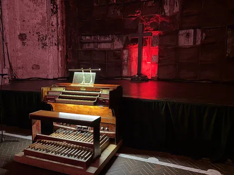
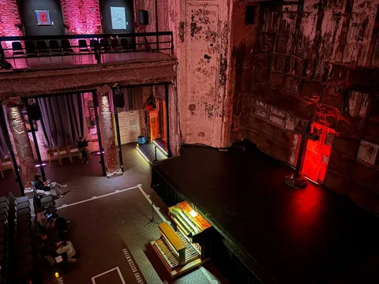
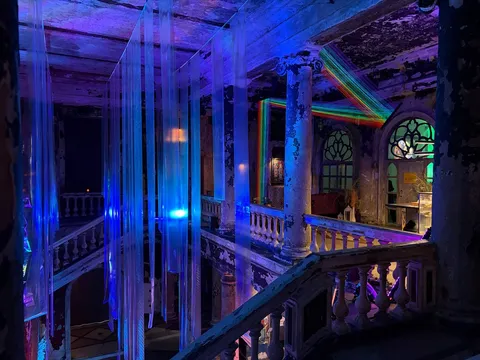
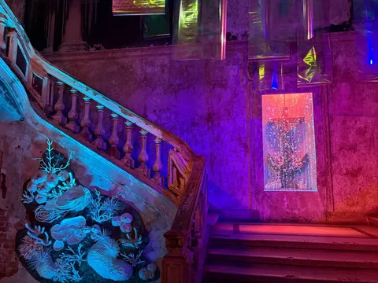

Ходили на той неделе на органный концерт в Анненкирхе. Кирха топовая, а вот орган плох. Потому что это электроорган. Когда ты внутренними óрганами не ощущаешь трепыхания воздуха в трубах огромного настоящего оргáна - это какая-то ерунда. Не зашло.
И тут я задумался, может луддиты и амиши в чем-то и правы. Вот возьму и организую свое поселение, где будут запрещены
- электроорганы
- электромобили
- электрокальяны
- электронные книги
- сенсорные телефоны
- автотьюн и mp3
- тиндер и нетмонет
Пойдете ко мне жить? Что еще предложите запретить из тех изобретений, которые отобрали у нас что-то доброе-вечное, с которыми ощущения не те?



